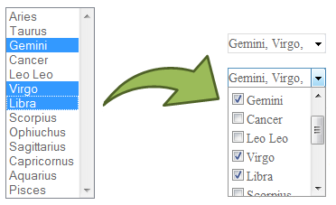

jQuery Dropdown Check List
The Dropdown Check List jQuery widget transforms a regular select html element into a dropdown checkbox list.

Copyright © Adrian Tosca <adrian.tosca@gmail.com>
Licensed like jQuery, see http://docs.jquery.com/Licensing.
Download
Download current version can be downloaded from google code Downloads. This page including all required files to run the examples can be downloaded as zip package from the same location.
Dropdown check list requires jquery.js and ui.core.js and has been tested with jquery version 1.2.6. The widget has been tested with IE 7, Firefox 3, Opera 9.6, Safari 3.1 (for windows) and Chrome 0.3 browsers.
Example
The existing select element with id 's1' is replaced by a dropdown checkbox list widget.
The widget will set hide the existing select element by modifying its display attribute to none.
The new widget will keep the replaced select options synchronized with the checkbox list so the postback is not affected in any way.
The text of the control is composed on the concatenated text of selected options in the list.
Because the width of the control will not allways accomodate all selected options, the control will show the full text on hover by setting its title attribute.
$("#s1").dropdownchecklist();
Some option items from original select initially selected
The existing select element with id 's2' already has some options selected. In this case the widget will take over the selection automatically on initialization.
$("#s2").dropdownchecklist();
Long text, shorter control
An option allow to set a fixed width on the control even if the dropdown list is wider. The dropdown will keep its size so the items in the list are correctly visible.
$("#s3").dropdownchecklist({ width: 100 });
Long list of options, with scroll
Another option allow to set a fixed height of the dropdown list. This is usefull when there is a big number of items. The dropdown list is scrollable to allow selection of all the items.
$("#s4").dropdownchecklist({ maxDropHeight: 100 });
Option to let the first item in list check all items
The firstItemChecksAll option allow to set attach a special behavior to the first item in the list. If the item is checked, all items in the list are checked.
$("#s5").dropdownchecklist({ firstItemChecksAll: true, maxDropHeight: 100 });
Select with groups
The existing select element with id 's6' has groups (optgroup elements). The options are indented in groups as with original select element.
$("#s6").dropdownchecklist();
Style
.ui-dropdownchecklistallows to modify the style of the control.ui-dropdownchecklist-hoverallows to add additional style when the mouse is over the control.ui-dropdownchecklist-activeallows to add aditional style to the control when the items in the drop container are collapsed.ui-dropdownchecklist-textallows to modify the style of the text that is shown in the control.ui-dropdownchecklist-dropcontainerallows to modify the style of the drop container.ui-dropdownchecklist-itemallows to modify the style of each dropdown item.ui-dropdownchecklist-item-hoverallows to add additional style to the dropdown items when the mouse is over them.ui-dropdownchecklist-groupallows to modify the style of group items.ui-dropdownchecklist-indentallows to modify the style of indented items when they are in a group
For more details see the example style sheet.